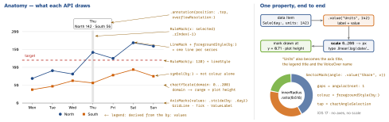

swiftui · folio
In one line: Swift Charts (iOS 16) is a declarative grammar of graphics: a Chart is a list of
marks (one visual element per data item); each mark maps data to visual properties
through .value("Label", v) plottable values; scales turn the data domain into pixels
and colours, and axes, legend, VoiceOver and Audio Graphs are derived from the same
labels — for free.
Download PDF Print view LaTeX source


The grammar
Chart(data) { BarMark(...) }orChart { ForEach ...}; a@ChartContentBuilder, so mark kinds mix (bars + aRuleMarkaverage).- Marks: Bar · Line · Point · Area · Rule · Rectangle (heat map) · Sector (iOS 17).
yStart:yEnd:/xStart:xEnd:draw ranges (Gantt, candles). - Data kind picks the scale: numbers = quantitative,
String/enum = nominal (bands),Date= temporal; own types conform toPlottable..value("Day", d, unit: .day)bins: the bar is one day wide. - Encodings
foregroundStyle / symbol / symbolSize / lineStyle(by:): each makes a scale and a legend entry. Bars on one x stack (stacking: .normalized .center .unstacked);position(by:)= side by side. - Scales
chartXScale(domain:range:type:):.linear .log .squareRoot .symmetricLog .power .date .category. Bars include 0:.automatic(includesZero: false)for a tight y. Fixed colours:chartForegroundStyleScale(["North": .blue]). chartYAxis(.hidden),AxisMarks(position: .leading),chartLegend(position:); lines:interpolationMethod(.monotone .catmullRom .stepStart ...)..annotation(position:alignment:spacing:)pins any view to a mark; iOS 17overflowResolution: .init(x: .fit(to: .chart))keeps it inside the chart.
Example — two series, target, tap-to-inspect, scroll
@State private var raw: Date? // raw x value, NOT a Sale
Chart {
ForEach(sales) { s in
LineMark(x: .value("Day", s.day, unit: .day),
y: .value("Units", s.units))
.foregroundStyle(by: .value("Store", s.store)) // = series
.symbol(by: .value("Store", s.store))
.interpolationMethod(.monotone) // no overshoot
}
RuleMark(y: .value("Target", 120))
.lineStyle(StrokeStyle(lineWidth: 1, dash: [4, 3]))
if let raw { RuleMark(x: .value("Day", raw, unit: .day)).zIndex(-1) }
}
.chartXSelection(value: $raw) // iOS 17
.chartScrollableAxes(.horizontal) // iOS 17
.chartXVisibleDomain(length: 3600 * 24 * 30) // SECONDSAccessibility
VoiceOver per mark + Audio Graphs (“Describe chart”, “Play Audio Graph”) come free, named from the .value labels; refine with .accessibilityLabel/Value on the mark. A hand-drawn chart (Canvas, image) gets nothing: .accessibilityChartDescriptor(r) (iOS 15), r: AXChartDescriptorRepresentable → AXChartDescriptor (axes + series).
Interactivity and newer plots — by iOS version
| 16 | chartOverlay { p in GeometryReader { g in ...} } + a DragGesture;
p.value(atX: loc.x - g[p.plotAreaFrame].origin.x, as: Date.self). |
| 17 | chartXSelection(value:/range:), chartAngleSelection — gesture built in; custom:
chartGesture { p in ...p.selectXValue(at:) }; plotFrame replaces plotAreaFrame.
Scroll: chartScrollableAxes, chartXVisibleDomain(length:),
chartScrollPosition(x:), chartScrollTargetBehavior. |
| 18 | Vectorized: LinePlot AreaPlot BarPlot PointPlot RectanglePlot RulePlot SectorPlot —
one plot per collection, key paths: LinePlot(sales, x: .value("Day",
\.day), y: .value("Units", \.units)). Functions:
LinePlot(x: "x", y: "y") { x in x * x }; return .nan = undefined. |
| 26 | Chart3D: PointMark(x:y:z:), SurfacePlot(x:y:z:) { x, z in ...} (y = f(x,z),
y is up), .chart3DPose($pose). |
Performance
Each mark is laid out, hit-tested and exposed to VoiceOver — thousands in a ForEach crawl. Aggregate first (bin, min/max per pixel), off the main actor, never in body. WWDC24: vectorized plots for big uniformly-styled data, marks for per-item modifiers or zIndex.
Traps
chartXSelectionyields the raw axis value (aDateat 14:37), not an item — look up the item whose day contains it.chartAngleSelection: a point on the cumulative total — walk a running sum(unverified).- Two series, no
series:/by:→ one zig-zag line joining both. chartXVisibleDomain(length:)on dates is in seconds.- No
unit:→ hairline bars;.catmullRomovershoots below 0,.monotonenot. - Colour-only series fail colour-blind users — add
symbol(by:). - Legend colours follow data order — pin them with
chartForegroundStyleScale.
Remember
“Mark × .value → scale → axis + legend + VoiceOver.” 16 grammar · 17 select, scroll, pie · 18 vectorized + functions · 26 3D.